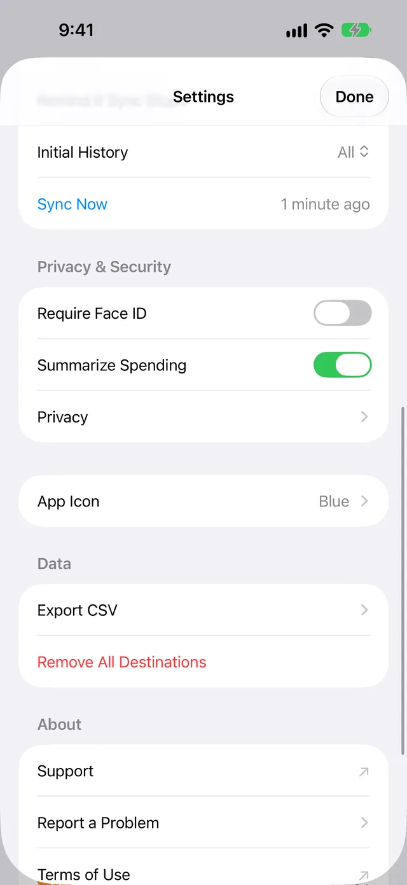
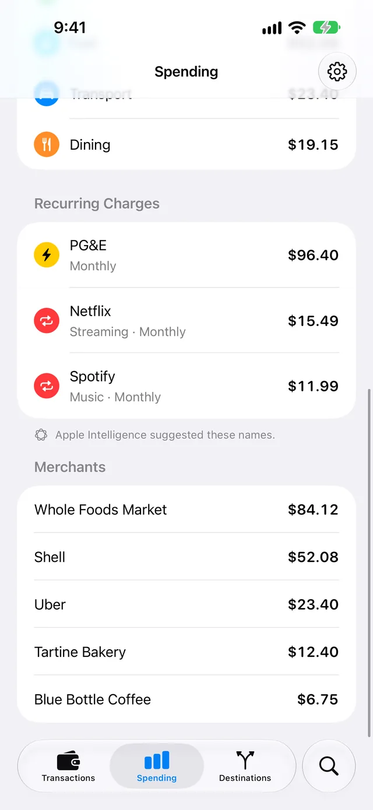
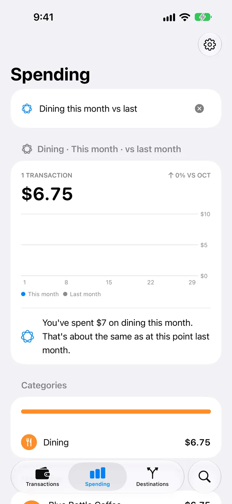

Spending
On your iPhone, Spending in WalletFeed shows the total of your Apple Card and Apple Cash purchases for this month. It also shows a bar for each day and the balances of your accounts. It shows your largest categories and merchants, and the charges that occur each month or each week. You can use Spending without WalletFeed Pro.
Open Spending
-
On your iPhone, open WalletFeed.
-
At the bottom of the screen, tap Spending.

Result: WalletFeed reads your transactions from Wallet. Then Spending shows the total and the chart for this month.
WalletFeed calculates the values for Spending on your iPhone and does not keep your transactions.
If Spending does not show a total, refer to If there is a problem.
The total for this month
The section for the month shows these items:
- The name of the month
- The change from the total at the same day and time of the month before this month (for example, "70% VS SEP" with an up arrow)
- The total for this month
- Below the total, if there are some, the pending purchases (for example, "Includes $84.00 pending") and the refunds (for example, "After $42.00 in refunds")
- The balance of your Apple Card, if Wallet gives it (for example, "Card balance $2,431.18, due Nov 30")
- A chart with one bar for each day of the month
- The Monthly Summary, below the chart
- Other Currencies, if you bought items in a different currency this month. It shows the total of these purchases in your currency and the currency codes (for example, "EUR, GBP").
The line for the card balance shows the due date only while a payment is due. If Apple owes you money, the line is, for example, "Card in credit $12.00". For the other balances, refer to Accounts.
An up arrow shows that the total increased, and a down arrow shows that it decreased. On the chart, a dashed line shows the average for one day. The label at the end of the line gives the amount (for example, "Avg $58"). If the largest day is more than 25% above the average, the chart also shows the amount of that day.
The total includes pending purchases. Refunds decrease the total. Transfers, bill payments and declined transactions are not in the total.
WalletFeed compares this month with the same days and time of the month before this month. For example, on October 15 at 2:00 PM, WalletFeed compares the total for October with the total from September 1 to September 15 at 2:00 PM. Spending shows the change only if the total for these days of the month before this month is more than zero.
The average is the total for this month divided by the number of days from the first day of the month to this day.
Show a month before this month
The section for the month has three pages: this month, last month and the month before last month.
-
Swipe to the right on the section for the month, with a fast movement of your finger.
Result: Spending shows the month before.
-
To go back, swipe to the left with a fast movement.
The total, the change, the chart, Categories and Merchants show the month on the page. Accounts and Recurring Charges do not change.
A month before this month has these differences:
- The total is the total of the full month. WalletFeed compares it with the full month before it.
- The oldest of the three months shows no change from the month before it.
- The Monthly Summary gives facts about that month: the total, the change from the month before it, the largest category and the largest purchase.
- The section shows no line for the card balance and no Other Currencies.
Show the total for one day
-
On the chart, touch and hold the bar for a day.
Result: The top of the section shows the date and the total for that day. The other bars become dim. The lines for pending purchases, refunds and the card balance go away while you show one day.
-
To show the total for a different day, move your finger slowly to the bar for that day.
A fast movement of your finger across the chart changes the month.
Monthly Summary
The Monthly Summary is below the chart. It gives facts about your purchases in the month that the section shows.
If Apple Intelligence is active on your iPhone and Summarize Spending is on, Apple Intelligence writes the Monthly Summary. Apple Intelligence uses facts that WalletFeed calculates (for example, the total and your largest purchase). A Monthly Summary from Apple Intelligence has the Apple Intelligence icon.
Apple Intelligence operates on your iPhone. WalletFeed does not send your transactions to a server for the Monthly Summary.
In each of these conditions, the Monthly Summary shows a light bulb icon and the first two facts that WalletFeed calculates:
- Apple Intelligence is not available on your iPhone.
- Summarize Spending is off in Settings.
- Apple Intelligence cannot write the Monthly Summary.
An example of the two facts is "You've spent $1,318 so far this month. That's 70% more than at this point last month."
Stop the Monthly Summary from Apple Intelligence
Settings shows Summarize Spending only when Apple Intelligence is available on your iPhone.
-
At the top of Spending, tap Settings (the gear button).
-
Scroll to Privacy & Security.
-
Set the Summarize Spending switch to off.

Result: The Monthly Summary shows the two facts from WalletFeed.
-
Tap Done.
When Summarize Spending is off, Ask Spending, Monthly Recap and the Trend of an account also show facts from WalletFeed.
To start the Monthly Summary from Apple Intelligence again, set the Summarize Spending switch to on.
Accounts
The Accounts section is below the section for the month. It has one row for each account that you give WalletFeed access to. Spending shows this section also when you have no purchases this month.
Each row shows these items:
- The name of the account, with a symbol
- The balance of the account. For Apple Card, the balance is the amount that you owe, with the pending transactions, as Wallet shows it.
- One line of text below the balance
- For Apple Card and Savings, a chart of the balance for about the last three months.
The line below the balance is the first of these texts that is applicable:
| Text | Condition |
|---|---|
| "Overdue" and an amount | An Apple Card payment is late. |
| "In credit" | Apple owes you money on Apple Card. |
| "Spent $1,180.00 this month" | You bought items with two or more accounts this month. |
| "Payment due Dec 6" | An Apple Card payment is due. |
The name, the symbol and the line of the chart are green for Apple Cash and Savings, which is money that you have. They are orange for Apple Card, which is money that you owe.
At the side of the chart are the lowest balance and the highest balance of these months. Spending shows the chart only if Wallet has balances for 5 or more days.
To open the screen of an account, tap its row. That screen shows the balance for a period of one week to one year. It also shows Available Credit, Minimum Payment and Overdue for Apple Card, and the interest and the fees of this year.
Spending reads the balances from Wallet each time that it opens. For the Spending widget, WalletFeed keeps only your Apple Card balance and the payment due date. To read them again, swipe down on Spending.
Activate Monthly Recap
Monthly Recap sends you one notification each month about your purchases in the month before. You can use Monthly Recap without WalletFeed Pro. Monthly Recap is off until you set it to on.
-
On your iPhone, open WalletFeed.
-
Tap Settings (the gear button) at the top of the screen.
-
In the Notifications section, set the Monthly Recap switch to on.
-
If iOS shows a message about notifications, tap Allow.
If you do not let WalletFeed send notifications, the switch stays off.
-
Tap Done.
If you set notifications for WalletFeed to off in the iOS Settings app, the switch stays on, but you do not get notifications. For the steps to set them to on again, refer to If WalletFeed shows "Notifications are off for WalletFeed.".
If you set the switch to on after the 2nd day of a month, WalletFeed sends the notification for the month before at that time.
The Monthly Recap notification
WalletFeed sends the notification about a month on the 3rd day of the next month. Thus, most pending purchases of that month are complete before WalletFeed calculates the total.
The title of the notification has the name of the month, for example "October Recap". The text gives these facts:
- The total of your purchases in the month
- The change from the month before that month, in percent
- The category with the largest total.
An example of the text is "You spent $2,340, 12% less than in September. Dining led, at $480." WalletFeed calculates the total as Spending does. Refunds decrease the total. Transfers, bill payments and declined transactions are not in the total.
If Apple Intelligence is active on your iPhone and Summarize Spending is on, Apple Intelligence writes the text of the notification. It uses the totals and the categories that WalletFeed calculates. It does not get the names of your merchants.
WalletFeed sends the notification when you open it, or when iOS starts WalletFeed after a change in Wallet. Thus, the notification can come after the 3rd day. Background Sync is not necessary for this notification.
WalletFeed sends only one notification for each month. It sends no notification for a month without purchases. While Sample Data is on, WalletFeed sends no Monthly Recap.
For Monthly Recap, WalletFeed keeps only the month of the last notification (for example, 2026-10). It keeps no amounts. Notification Center keeps the notification until you remove it. When notification previews are off, iOS does not show the text of the notification on the Lock Screen.
Stop Monthly Recap
- On your iPhone, open WalletFeed.
- Tap Settings (the gear button) at the top of the screen.
- In the Notifications section, set the Monthly Recap switch to off.
- Tap Done.
Activate Payment Due Reminder
Payment Due Reminder sends you one notification the day before your Apple Card payment is due. You can use Payment Due Reminder without WalletFeed Pro. Payment Due Reminder is off until you set it to on.
-
On your iPhone, open WalletFeed.
-
Tap Settings (the gear button) at the top of the screen.
-
In the Notifications section, set the Payment Due Reminder switch to on.
-
If iOS shows a message about notifications, tap Allow.
If you do not let WalletFeed send notifications, the switch stays off.
-
Tap Done.
If you set notifications for WalletFeed to off in the iOS Settings app, the switch stays on, but you do not get notifications. For the steps to set them to on again, refer to If WalletFeed shows "Notifications are off for WalletFeed.".
The Payment Due Reminder notification
WalletFeed sends the notification at 9:00 on the day before the payment is due. If you set the switch to on after that time, WalletFeed sends the notification at 9:00 on the due date.
The title of the notification is "Apple Card Payment Due Tomorrow" or "Apple Card Payment Due Today". The text is "You can pay it in Wallet." The notification shows no amount.
The due day is the same day as in Accounts and in the Spending widget, in each time zone of your iPhone. Perhaps you set the switch to off and then to on after the notification came. If the notification is still in Notification Center, WalletFeed sends no second notification.
WalletFeed sends one notification for each due date. It sends no notification when Wallet shows no payment due. If Wallet shows no payment due before the notification comes (for example, after Wallet records your payment), WalletFeed removes the notification. While Sample Data is on, WalletFeed sends no Payment Due Reminder.
WalletFeed reads the balance and the due date from Wallet when you open WalletFeed. iOS also starts WalletFeed after a change in Wallet.
Background Sync is not necessary for this notification.
For Payment Due Reminder, WalletFeed keeps only the switch. iOS keeps the notification until it comes.
Stop Payment Due Reminder
- On your iPhone, open WalletFeed.
- Tap Settings (the gear button) at the top of the screen.
- In the Notifications section, set the Payment Due Reminder switch to off.
- Tap Done.
Categories and merchants
The Categories section shows the five categories with the largest totals this month. Other shows the total of all other categories. At the top of the section, a bar shows each category in a different color. The length of each color shows the part of the total for that category.
The Merchants section shows the five merchants with the largest totals this month.
If the section for the month shows a month before this month, these two sections show the totals of that month.
Recurring Charges
The Recurring Charges section shows charges that occur again each month or each week (for example, subscriptions). For each charge, the section shows the name, Monthly or Weekly, and the value of the last charge.
To find these charges, WalletFeed reads the transactions from this month and the two months before this month. Apple Intelligence can give each charge a type and a name that is easy to read. For example, "NETFLIX.COM 866-579" becomes "Netflix", and its type is "Streaming". When Apple Intelligence gives these names, the section shows "Apple Intelligence suggested these names."

The last row of the section is All Subscriptions. It opens Subscriptions, which reads 14 months and also shows the charges that occur each year. If WalletFeed finds no recurring charges, the heading of the section is Subscriptions, and the section shows only this row.
For more information, refer to Recurring Charges.
Monthly Installments
If you have Apple Card Monthly Installments, the Monthly Installments section shows your installment charges. The section shows the charges from the month of the last installment charge. The largest charge is first. For each charge, the section shows the name, the date (for example, "Sep 30") and the value.
Each installment charge has the date of the last day of a month. Thus, until the last day of this month, the section shows the charges from the month before this month. Recurring Charges does not show installment charges.
Wallet does not give WalletFeed the remaining payments or the remaining balance. Thus, the section does not show them.
Tax Reports
The Tax Reports section is the last section of Spending. It has one row, Tax Pack, which shows a year (for example, 2026). The row opens Tax Pack with that year.
Use Ask Spending
If Apple Intelligence is available on your iPhone, Spending shows Ask about your spending at the top of the screen.
-
Tap Ask about your spending.
-
Type the transactions that you want to see (for example, "Dining this month vs last").
-
Tap Go on the keyboard.

Result: Spending shows the total, the chart, the categories and the transactions for the text that you typed.
-
To show the total for this month again, tap Clear (the x button).
For more information, refer to Ask Spending.
Show new transactions
To show new transactions on Spending, swipe down on the screen.
If there is a problem
If Spending shows "No Cards"
You did not select Wallet accounts for WalletFeed.
-
Tap Choose Accounts.
Result: iOS shows the Wallet access screen.
-
Select the accounts that WalletFeed reads.
-
For each account, select the start date.
-
Tap Share.
For more information, refer to Wallet accounts.
If Spending shows "Wallet Access Off"
You did not let WalletFeed read Wallet, or you stopped its access to Wallet in the Settings app.
- On your iPhone, open the Settings app.
- Tap Privacy & Security › Wallet › WalletFeed.
- Select the accounts that WalletFeed reads.
- Open WalletFeed again.
If Spending shows "No Spending"
The Wallet accounts that WalletFeed can read have no purchases this month, or the total for this month is zero or less than zero. For the transactions in the total, refer to The total for this month.
If Spending does not include a Wallet account, refer to Wallet accounts.
If Spending shows "Couldn't Read Wallet"
WalletFeed cannot read your transactions from Wallet.
To make WalletFeed read Wallet again, swipe down on the screen.
Related
Updated November 25, 2026